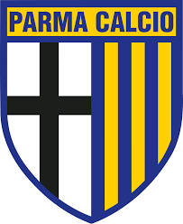

SERIE A
La Serie A è uno dei campionati più importanti del mondo, dove da sempre si misurano alcune delle squadre e giocatori migliori della storia del calcio. Basti pensare all’Inter di Helenio Herrera o al Milan di Sacchi e Capello, autentiche corazzate che hanno brillato in Italia e in Europa portando lustro al nostro campionato. Successi, questi, che negli ultimi anni non sono stati ripetuti, anche se ci sono da considerare le vittorie della Roma in Conference League e dell’Atalanta campione dell’Europa League di quest’anno, oltre alle finali disputate da Inter (la stagione scorsa in Champions) e Fiorentina (due volte finalista in Conference nelle ultime due stagioni) che, seppur abbiano perso, hanno consentito all’Italia di migliorare la propria posizione nel ranking UEFA. Questi risultati hanno peraltro stupito numerosi addetti ai lavori ed esperti di statistiche, quote e scommesse online e non che non si aspettavano che le italiane facessero così bene in Europa. Guardando in casa nostra, invece, un risultato così sorprendente si è verificato l’anno scorso con la vittoria dello scudetto da parte del Napoli.
| nome | stemma | posizione |
| napoli |  |
1 |
| inter | 2 | |
| atalanta |  |
3 |
| juventus | 4 | |
| lazio | 5 | |
| roma | 6 | |
| bologna | 7 | |
| milan | 8 | |
| fiorentina | 9 | |
| como | 10 | |
| torino | 11 | |
| udinese |  |
12 |
| genoa | 13 | |
| cagliari | 14 | |
| verona | 15 | |
| parma |  | 16 |
| lecce | 17 | |
| empoli | 18 | |
| venezia | 19 | |
| monza | 20 |
Per tornare alla pagina di scelta premere qui